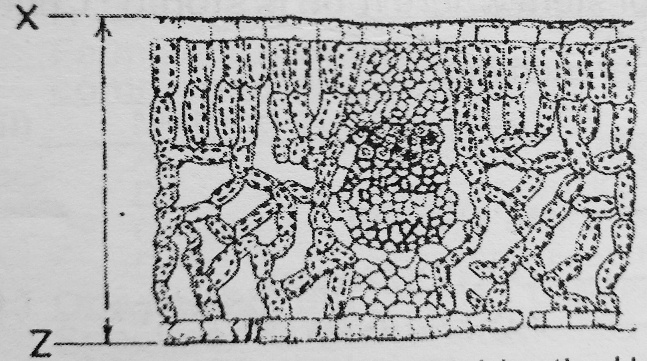
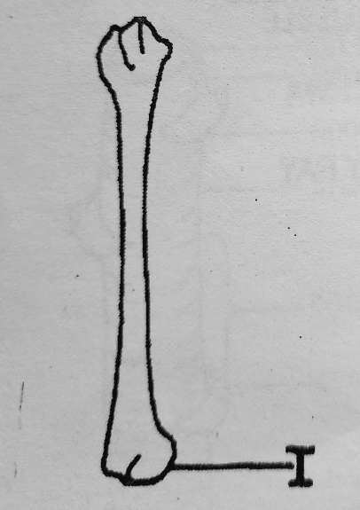
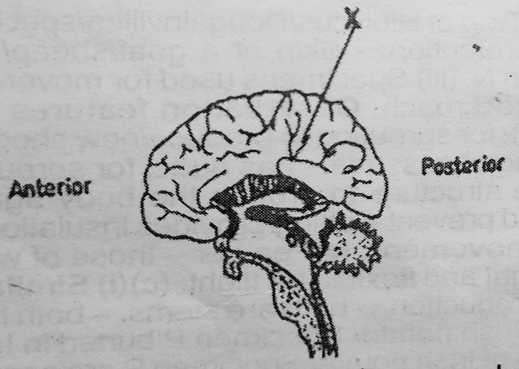
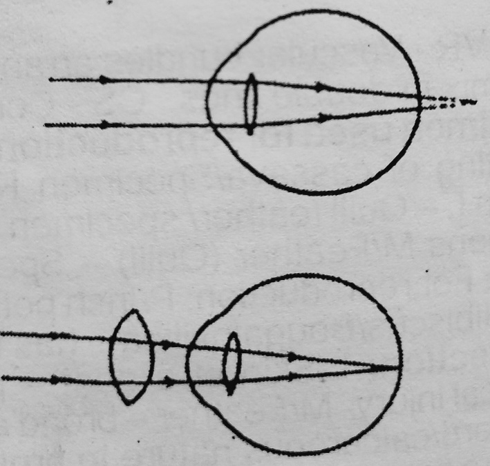
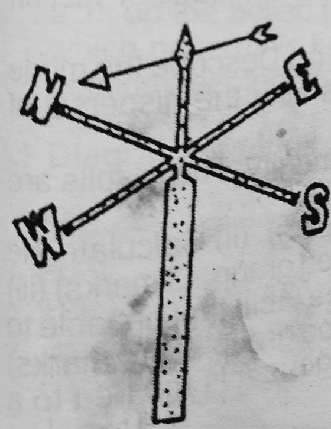

- The excretory product in protozoans is
- amino acid
- uric acid
- ammonia
- urea
Review answer
Correct option is C
Ammonia is the excretory product in most lower organisms like protozoa. It easily diffuses out of the body of the organism. Other higher animals excrete uric acid and urea - especially in those who have adequate supply of water.
- Which Of the following is a living organism?
- Muscle
- Nucleus
- Yeast
- Mitochondrion
Review answer
Correct option is C
Yeast is a living organism. It is a fungus. In levels of organization, muscle is a tissue, nucleus is an organelle, mitochondrion is also an organelle.
- Which of the following organisms is the most specialized?
- Paramecium
- Amoeba
- Spirogyra
- Rhizopus
Review answer
Correct option is C
Spirogyra is the most specialized. It belongs to the kingdom plantae and division thallophyta. Paramecium and amoeba belong to kingdom Protista and Rhizopus belongs to kingdom fungi.
- Active transport can be defined as the movement of
- substances from a region of high concentration to a region of low concentration
- substances from a region of low concentration to a region of high concentration across a living cell membrane
- substances across a living cell membrane using energy from the cell
- movement of molecules in a medium
Review answer
Correct option is C
Active transport requires movement from a region of low to high concentration, using the energy from the cell in the form of ATP.
- Which of the following cell inclusions can destroy other cell organelles?
- Centriole
- Ribosome
- Lysosome
- Mitochondrion
Review answer
Correct option is C
Lysosome is an organelle that contains digestive enzymes which are able to lyse or digest other intracellular organelles or molecules.
- In which of the following yam tissues will osmosis occur?
- Boiled and peeled
- Raw and peeled
- Boiled and unpeeled
- Roasted and peeled
Review answer
Correct option is B
Osmosis is movement of water from a region of low concentration to a region of high concentration through a selectively permeable membrane. Example of such membrane is a raw and peeled yam.
- The line XZ in the diagram below represents an actual distance of 10.0 cm and the length of the diagram is 5.0 cm. What is the magnification of the diagram?

- × 0.2
- × 0.5
- × 2.0
- × 50.0
Review answer
Correct option is B
Magnification is the ratio of the length of the diagram to the length of the actual object. In this case, it is 5/10 = 0.5
- The following events occur during mitosis in a cell:
I. Chromatids separate
II. Chromosomes become visible
Ill. Chromosomes align at the equator
IV. Cytoplasm divides (Cytokinesis)
The correct sequence of the events is
- III, II, IV, I
- II, III, I,IV
- II, I, III, IV
- II, IV, I, III
Review answer
Correct option is B
The order described in B is Prophase – Metaphase – Anaphase – Telophase
- Which of the following statements about asexual reproduction is correct? It
- always involves one parent but the offspring is genetically different from the parent
- may involve two parents but the offspring is always identical to one parent
- always involves one parent and the offspring is genetically identical to the parent
- involves two parents but the offspring is not genetically identical to any of the parents
Review answer
Correct option is C
Asexual reproduction involves a single organism giving rise to an offspring of its kind which retains the exact genetic component of the parent. Usually performed by lower organisms, Examples are binary fission and multiple fission.
The diagram below is an illustration of a mammalian bone. Use it to answer questions 10 and 11

- The bone illustrated above is the
- femur
- humerus
- radius
- ulna
Review answer
Correct option is B
This is the humerus, the bone of the arm.
- The function of the part labelled I is to
- fit into the glenoid cavity of the scapula
- fit into the acetabulum of the pelvic girdle
- support the lower arm
- prevent the arm from bending backwards
Review answer
Correct option is C
The lower part labelled is the point where it attaches to the ulnar and the radius at the elbow, in order to support the forearm (lower arm).
- Which of the following processes is not a function of the mammalian skin?
- Regulation of body temperature
- Reception of external stimuli
- Excretion
- Gaseous exchange
Review answer
Correct option is C
The mammalian skin does not participate in gaseous exchange. It performs the other listed functions.
- The legs of an accident victim with a fractured vertebral column and injured spinal cord could not be raised because
- impulses from receptors in the legs cannot travel to the brain
- impulses from the brain cannot travel to the legs
- chemical substances will be released at synapses in the central nervous system
- reflex actions cannot take place in the legs
Review answer
Correct option is D
The reflex arc is a very important component of the reflex action which has its control centre in the spinal cord. Injury to the spinal cord will lead to disruption of the reflex arc and will prevent the integration of afferent and efferent pathways.
- Which of the following conditions in flowering plants enhance self-pollination?
- Cleistogamy
- Heterostyly
- Protandry
- Protogyny
Review answer
Correct option is A
Cleistogamy is a type of automatic self-pollination of certain plants that can propagate by using non-opening, self-pollinating flowers.
- The diagram below is an illustration of the left side of the human cerebrum. The part labelled X controls

- general memory
- speech
- sight
- respiratory functions
Review answer
Correct option is A
The part labelled belongs to the limbic system, which are responsible for emotions and memory.
Use the diagram below to answer question 16 only.
- The diagram above is an illustration of

- normal sight
- shortsightedness
- correction of long sightedness
- correction of short sightedness
Review answer
Correct option is C
This illustrates the correction of long sightedness. In the first diagram, the image is formed behind the retina. In the second diagram, this is corrected by using a convex/converging lens which brings the image on the retina.
- The inability to maintain proper balance of the body in humans may be due to a defect in the
- cochlea
- Eustachian tube
- semi-circular canals
- oval window
Review answer
Correct option is C
The semicircular canals are found in the ear and are responsible for balance in different directions. They are called the vestibular system of the ear.
- The following substances pass into the blood of the foetus from the mother’s blood via the placenta except
- carbon dioxide
- glucose
- viruses
- antibodies
Review answer
Correct option is A
Carbon dioxide is a waste product and it passes from the foetus to the mother but not from the mother to the foetus via the placenta. Glucose, viruses and antibodies can all be transferred from the mother to the foetus.
- An inferior ovary of a flower is situated
- below the floral parts
- above the floral parts
- at the same level with all the floral parts
- at the centre of the floral parts
Review answer
Correct option is A
It lies below the floral parts. Flowers with inferior ovaries are called epigynous.
- Older parts of plant roots do not normally absorb water because
- they lack xylem
- they have small surface area
- the phloem is dead
- they lack root hairs
Review answer
Correct option is D
Root hairs are specialized for water absorption in plants. Some older plants lack root hairs. Xylem is needed for water transportation, not absorption.
- The amount of starch in a germinating seed decreases because the starch is used up
- for respiration and building up of cells
- to build cellulose cell wall
- to develop meristematic tissues
- for the production of enzymes
Review answer
Correct option is A
Starch is the form in which carbohydrates are stored in plants. With time, the starch gets broken down for respiration and in building up of cells.
- The purpose of treating poor soil with lime is to increase the quantity of
- nitrogen
- phosphorus
- calcium
- sulphur
Review answer
Correct option is C
Lime is a rich source of calcium.
- A meal consisting of yam and a lot of vegetables is not balanced because it does not contain
- carbohydrates
- proteins
- vitamins
- minerals
Review answer
Correct option is B
Yam is carbohydrate and vegetables are sources of vitamins. Protein is absent in this combination.
- In a Biuret test, some protein was mixed with sodium hydroxide solution. Which of the following chemicals should be added to the mixture for a positive result?
- mercurous nitrate
- copper sulphate
- sodium carbonate
- silver nitrate
Review answer
Correct option is B
Biuret test is a test for the presence of protein. It involves the use of sodium hydroxide NaOH and copper sulphate CuSO4.
- A characteristic feature of plant parasites is the
- possession of holdfast
- possession of rhizoids
- development of hanging roots
- development of haustoria
Review answer
Correct option is D
All parasitic plants have modified roots, named haustoria which penetrate the conducting system of the host plant such as xylem and phloem. This enables them to be able to extract water and nutrients from the host.
- The part of a leguminous plant where bacteria like Azotobacter can be found is
- at the nodes of the stem
- at the internodes
- in the root nodules
- in the spongy mesophyll
Review answer
Correct option is C
The root nodules of leguminous plants contain bacteria.
- The following adaptations are associated with the flight of birds except
- reduced body weight
- streamlined shape
- presence of powerful muscles
- clawed digits
Review answer
Correct option is D
Clawed digits are not needed for flight. The other options are necessary modifications for flight.
- The following habitats can be found in West Africa except
- mangrove swamp
- sahel savanna
- savanna grassland
- temperate grassland
Review answer
Correct option is D
Temperate grassland is not found in West Africa. They are mostly found in higher latitudinal regions which are closer to the poles. West Africa is close to the equator.
- The difference between a community and population is
- a community is made up of organisms of the same species while a population is made up of organisms of different species
- a community is made up of populations of living organisms while a population is made up of organisms of the same species
- an ecological niche does not exist in the community but it does in a population
- a community attracts competition but a population does not
Review answer
Correct option is B
Community is a population of living organisms in a region while population is made up of organisms of the same species.
- Which of the following statements about the circulation of water in nature is not correct? Water
- constantly evaporates from seas, rivers, lakes and soil
- vapour rises, cools, condenses and precipitates as rain and dew
- removed from oceans is permanently lost
- is lost in plants by transpiration and decay
Review answer
Correct option is C
Water cycle is an important ecological cycle. It shows some degree of law of conservation of matter in that water can be changed from one form to another and is constantly cycling. So, losses from oceans are not permanent.
The diagram below illustrates an ecological instrument. Use it to answer questions 31 and 32

- The instrument is
- an anemometer
- a hygrometer
- a barometer
- a wind vane
Review answer
Correct option is D
This is the wind vane.
- The instrument is used to measure the
- direction of wind
- speed of wind
- air pressure in a habitat
- turbidity of water
Review answer
Correct option is A
It measures the direction of wind. Anemometer measures the speed of wind.
- The following organisms are consumers except
- earthworm
- spirogyra
- bacteria
- rhizopus
Review answer
Correct option is B
Spirogyra is an autotroph, and like other plants, can be called a producer. That is, they make use of resources from the environment to produce their own food through photosynthesis.
Use the substances listed below 10 questions 34 and 35
I. Fertilizer
II. Insecticides
Ill. Sewage
IV. Crude oil
V. Sulphur dioxide
- The atmosphere can be polluted by
- I only
- Ill only
- IV only
- II and V only
Review answer
Correct option is D
Insecticides and sulphur dioxide can be suspended in the atmosphere as pollutants.
- Which of the substances constitute domestic waste?
- I only
- Ill only
- IV only
- II and V only
Review answer
Correct option is B
Sewage is a domestic waste.
- The table below shows the oxygen level number of green plants and fish in rivers flowing through four towns. Which of the towns is likely discharging untreated sewage in their river?
| Town | Oxygen level | Green plants | Fish |
|---|
| A. | High | Few | Many |
| B. | Low | Many | Many |
| C. | High | Few | Few |
| D. | Low | Many | Few |
- I only
- Ill only
- IV only
- II and V only
Review answer
Correct option is D
When untreated sewage is dropped into a river, microorganisms decompose it and also use up the oxygen in the river, the oxygen level drops. The decomposed sewage serves as manure for the plants and they grow. However, reduced oxygen levels will make fishes unable to survive.
- Which of the following natural resources is non-renewable?
- Water
- Coal
- Forest
- Air
Review answer
Correct option is B
Coal, natural gas, oil and nuclear energy are non-renewable.
- Which of the following statements is not a reason for banning bush burning? It
- allows for quick regrowth of grasses
- kills soil microorganisms
- leaves the soil bare of vegetation
- burns off organic soil nutrients
Review answer
Correct option is A
This is not a reason for banning bush burning.
- Which of the statements below explains why fertilizers are added to soils?
- Increasing the humus of the soil
- Improving the water-retaining property of the soil
- Increasing the nutrient level of the soil
- Preventing soil erosion
Review answer
Correct option is C
Fertilizers help to increase the nutrient content of the soil.
- Characteristics that exhibit continuous variation are generally controlled by
- a single gene
- recessive genes
- epistatic interactions
- multiple genes
Review answer
Correct option is D
Characteristics that control continuous variations are controlled by multiple genes and are said to be polygenic.
- Differences in characteristics that exist among individuals of the same species is referred to as
- genetics
- dominance
- hybrid
- variation
Review answer
Correct option is D
This is variation.
- Which of the following traits is not a morphological variation in humans?
- Ability to taste PTC
- Colour
- Fingerprints
- Size
Review answer
Correct option is A
Ability to taste PTC is a physiologic variation, not morphologic.
- Which of the following statements about chromosomes is correct?
- All the chromosomes of a species are the same in shape
- The number present in a species is constant
- They are neatly arranged in the cytoplasm
- They bear ribosomes on their outer membranes
Review answer
Correct option is B
The number of chromosomes is usually constant in a particular species of organism. In man, there are 23 pairs.
- A small stem from a hibiscus plant was placed in a nutrient medium, and it developed into a new plant. The new plant was reproduced
- asexually with a different genotype from the parent plant
- sexually with a different genotype from the parent plant
- asexually with the same genotype as the parent plant
- sexually with the same genotype as the parent plant
Review answer
Correct option is C
This is still an asexual means of reproduction.
- The F1 generation of a cross between a red cock and white hen were all red because the gene for the
- white colour did not segregate
- red colour was dominant
- white colour was dominant
- red colour was recessive
Review answer
Correct option is B
A dominant character is one which is expressed whether appearing in a homozygous or heterozygous state.
- Which of the following diseases can be inherited?
- Pneumonia
- AIDS
- Sickle cell anaemia
- Goitre
Review answer
Correct option is C
Sickle cell anaemia is a genetic disease and can be passed from parents to offspring.
- In dihybrid inheritance, Mendel considered
- a pair of contrasting characters
- two pairs of contrasting characters
- three pairs of contrasting characters
- four pairs of contrasting characters
Review answer
Correct option is B
Dihybrid cross involves two pairs of contrasting characters. Examples are Height – tall & short and Color - red & white.
- The main reason for nuptial flight in termites is to
- escape unfavourable conditions
- search for food
- form new colonies
- communicate with one another
Review answer
Correct option is C
The main reason for the nuptial flight is to form new colonies.
- Which of the following organisms is not a social insect?
- Termites
- Ants
- Grasshoppers
- Bees
Review answer
Correct option is C
Grasshoppers are not social insects. They do not possess the characteristics of social insects which include; group integration, division of labor, and overlap of generations.
- Lamarck's theory of evolution is based on the fact
- organisms acquire genes from their parents
- organisms pass on acquired characters to their offspring
- characteristics of organisms are determined by the creator
- characteristics of organisms are the sum of their parents' characters
Review answer
Correct option is B
Lamarck’s theory of evolution proposes that organisms can pass on acquired traits to their offsprings.